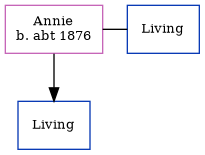

Annie Tutt c1876 -
[ Home ] | [ Calendar ] | [ Surnames Index ] | [ Errors ] | [ Family History ]Annie, the wife of James Edmund Stephen Thomas (the first cousin twice-removed on the father's side of Nigel Horne), was born in Killeagh, Cork, Ireland c. 18761. She married James (with whom she had 1 surviving child, ) in 19031. On 2 Apr 1911, she was living in Yateley, Hampshire, England1.
Citations
- 1911 England Census Online publication - Provo, UT, USA: Ancestry.com Operations, Inc., 2011.Original data - Census Returns of England and Wales, 1911. Kew, Surrey, England: The National Archives of the UK (TNA), 1911. Data imaged from the National Archives, London, England. (Marital Status: MarriedRelation to Head of House: Wife)
Family Tree
Map
Generated by ged2site. Last updated on Jul 3, 2024